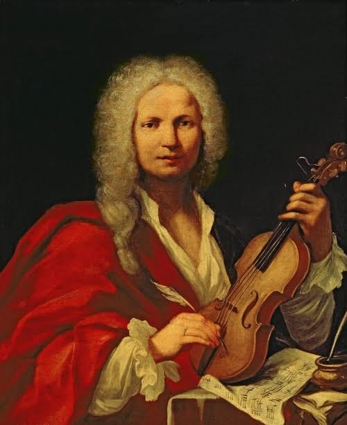
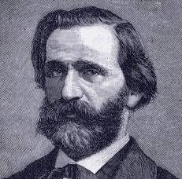
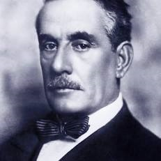

Italy is universally recognized as the birthplace of opera, a genre that emerged in the 17th century. Italian composers shaped the structures of modern European music, and the Italian language remains the standard for musical terminology worldwide (such as allegro, forte, and soprano).

Antonio Vivaldi:
The Baroque master behind the timeless violin concertos, The Four Seasons.

Giuseppe Verdi:
Famous for sweeping, emotional 19th-century operas like La Traviata and Aida.

Giacomo Puccini:
The Romantic genius who composed La Boheme, Tosca, and Turandot (which features the legendary aria "Nessun Dorma").